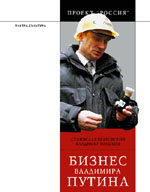
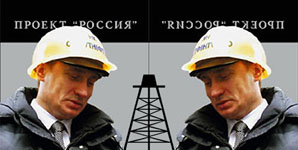

Станислав Белковский, Владимир Голышев • Бизнес Владимира Путина • вне серий • 16.06.2006

«БИЗНЕС ВЛАДИМИРА ПУТИНА» Станислава Белковского и Владимира Голышева – сборник аналитических статей, посвященных ответу на вопрос «Who is Mr. Putin?»
В отличие от всех предшествующих попыток дать ответ на этот вопрос, авторы книги не слишком интересуются идеологией Путина. Поскольку и героя книги идеология тоже не интересует. По мнению политологов, главная цель жизни и деятельности Путина – чисто деловая. Президентство – это просто бизнес. Последний международный скандал – «газовая война» с Украиной – только доказывает это. Все остальное – власть, судьба страны, будущее ее народа – не очень важны для него. Главная его заслуга перед страной в том, что он еще правит нами, – вот тот посыл, который кремлевская бюрократия адресует находящемуся за гранью ее понимания народу. А функция народа с точки зрения Кремля – оплачивать благосклонность терпеливых правителей. Деньгами и жизнями.
Владимир Путин, крестный отец всея Руси (Венсан Жовер, Le Nouvelle Observateur, 18.07.2006)
Короче говоря, “Россией правит своего рода мафиозный купол, который грабит страну размером с континент и с населением в 140 млн человек – купол, непререкаемым крестным отцом которого является Путин”, – подытоживает в своем духе политолог Станислав Белковский, только что издавший в Москве скандальную книгу под названием “Бизнес Владимира Путина”.
http://www.inopressa.ru/nouvelobs/2006/07/13/14:00:16/poutine
Неконструктивная критика (АЛЕКСАНДР ПАНОВ, www.ej.ru, 24.07.2006)
Политический кризис на Украине сделал медиагероем дня в России политолога Станислава Белковского — как главный эксперт по жизни соседней республики он не покидал страниц газет и экрана телевизора. И так совпало, что именно сейчас модное издательство «Ультра.Культура» выпустило сборник статей Белковского и его коллеги по Институту национальной стратегии Владимира Голышева «Бизнес Владимира Путина» — собрание хлестких антипрезидентских памфлетов и академических меморандумов с экономическими выкладками.
Вроде бы всем оппонентам нынешнего режима остается только радоваться — Белковский ругается на Путина не в призрачном интернете или недолговечной газете, а в книге, изданной в твердом переплете, с изящным оформлением, на хорошей бумаге, пятитысячным тиражом. По внешнему виду это даже слишком респектабельная критика власти, но и автор — человек солидный. Учредитель и президент Института национальной стратегии, основатель и владелец сайта АПН. Ру, политконсультант, среди клиентов которого были в свое время Константин Боровой, Сергей Доренко, Борис Березовский, Юлия Тимошенко, страстный публицист, которого равно готовы печатать «Известия» и «Завтра». Писатель, в конце концов — в новой книге есть два вполне беллетристических ядовитых отступления в духе Салтыкова-Щедрина, а года три назад Белковский под псевдонимом Андрей Штольц выпустил претенциозную и скандалезную фантасмагорию «Либертриллер. Краткая история четырех убийств». И вот столь нетривиальная и одаренная личность в столь весомой форме обсуждает возможности досрочного добровольного ухода Владимира Путина и призывает к (мирному) государственному перевороту. Кажется, весомый камешек получила оппозиция для своей общей пращи.
Однако это если считать, что прекрасный тираноборец Давид сшит из разных частей наподобие творения студента Франкенштейна и в борьбе за правое дело союзников не выбирают. Да, Белковский критикует Путина, но с каких позиций? Он обвиняет его всего лишь в вялости, коррумпированности, равнодушии к национальным интересам, продаже родины, в том, что он — бизнесмен, думающий о собственном кошельке и счастливой старости в Баден-Бадене, а не о власти и империи. Да-да, Империи: «Именно Путин взял твердый курс на превращение России в провинциальное государство-нацию, похоронив имперские экспансионистские устремления». Он обвиняет президента в «неспособности понимать свой народ и говорить с народом на правильном мистическом языке». Сравнивая Путина с Франко (!), наш автор восклицает: «Вообразим ли Путин, сидящий с подствольным гранатометом в блиндаже перед решающим вооруженным броском в пекло борьбы за власть?»
Ох, публикации в газете «Завтра» сильно сказались на аналитическом сознании бывшего программиста-системотехника (да и на стиле тоже). Большинство цивилизованных стран отвергли сегодня «экспансионистские устремления» и довольствуются национальным принципом устройства, при этом предполагающим мирное сосуществование разных наций и этносов. Я не знаю, какой мистический язык «правильный», а какой — нет, но хотелось бы, чтобы президент отдавал четкие и ясные распоряжения, а не бубнил акафисты. И, кажется, место главы государства — в резиденции, а не в блиндаже. Небритый империалист с гранатометом и томиком Беме под мышкой — привлекательный литературный образ, но писательские грезы Белковского плохо сочетаются с его политической практикой, а он, что ни говори, — практикующий политтехнолог (хотя сам ненавидит это слово). Потому у него и получается, что получилось: Боровой — маргинал, Березовский — эмигрант, Доренко — свободный романист-фантаст, Тимошенко — сами знаете…
Но вот что интересно. При всем прекраснодушии своего образа мыслей Станислав Белковский бежит сферы абстрактных идей. Типа свобода, демократия, законность и т. д. Обоснование простое: «Второй президент РФ по своей природе вообще не политик и тем более не империалист. Он — обычный и типичный предприниматель. И все его решения и действия подчинены исключительно логике крупного бизнеса, сводящейся к извлечению прибыли». И автор старательно рассказывает, как его герой с присными обворовывают страну и лишают ее геополитического веса. (Правда, путаясь в показаниях. Например, на стр. 36 мы читаем, что Путин закрыл базы в Лурдесе (Куба) и Камрани (Вьетнам), дабы сэкономить (читай — украсть) 150 млн долларов. А вот на стр. 74 уже можно узнать, что арендная плата за эти стратегические объекты была 500 миллионов. Но это так, к слову.) И речь, действительно, идет об одной экономике. Ни слова о Чечне, о нарушении законов, о пресловутой «вертикали власти», о нарушениях гражданских свобод, о политических процессах. Лишь один раз Белковский упоминает «заведомо ложные измышления русских либералов», с которыми ему не пути и которых он сильно не любит.
Зато, выходит, любит президента. Ибо нарисовать Путина обычным вором (ну необычным, согласен — государственного масштаба) — значит оказать ему бесценную услугу. Ну когда же в России не воровали! (Помните карамзинский ответ государю?!) Воров прощали: тать — не убивец. И к казнокрадству привыкли, а вот царя, гнавшего на бессмысленную военную погибель, с трона сбросили. Но Белковский шибко боится революции («Надо сделать так, чтобы революции все-таки не произошло. Обязательно»), гнева народного, активного прямого действия. Властное место ему нужно в целостности и сохранности — он сам в него метит, рассуждая о «бескровной передаче власти новой национальной элите, для которой сохранение в истории самодостаточного российского государства-цивилизации — приоритет и задача номер 1». Оттого и «отмазывает» ВВП, обвиняя его в мошенничестве вместо уголовщины — статья другая, более мягкая.
Так что Белковский — писатель-писателем, а гусиные перья не ест. Вся эта имперская ахинея — красивое прикрытие для очередной политтехнологической интриги. И нужен нам такой камень в праще?
http://www.ej.ru/comments/entry/4359/
Прикладная политология для невменяемых баб и мужиков (Анна Гуткевич, politcensura.ru, 11.01.2006)
Книга Станислава Белковского и Владимира Голышева “Бизнес Владимира Путина” вызывает двойственное чувство. С одной стороны, на фоне отсутствия полноценных материалов о Владимире Путине сам факт попытки анализа его деятельности представляет большой интерес, с другой – книга оставляет ощущение какой-то незавершенности, сомнения. С самого начала приятно поразила точность краткого содержания, приведенного на обложке: собственно говоря, после него и книгу читать не обязательно, основная суть уловлена просто замечательно. Наверное, для затравки стоит все же оставлять простор для фантазии читателя, мотив для того, чтобы раскрыть книгу и начать читать.
В первой части книги опубликованы публицистические размышления С.Белковского, оформленные в виде своеобразных эссе, более развернутых (если судить по концевым сноскам) по сравнению с опубликованными в различное время статьями. Автор попытался дать свой ответ на регулярно поднимаемый вопрос “Who is Mr. Putin?”. Парадоксально, но этот вопрос не утратил своей актуальности спустя 6 лет с момента избрания В.Путина. Сам факт того, что президент страны остается загадкой для своих граждан, говорит о том, что он, как олицетворение верховной власти в государстве, чрезвычайно далек от своего народа, непонятен как простым гражданам, так и тем, кто более тесно связан с государством и политикой. И это обстоятельство неоднократно упоминается в “Бизнесе…”.

Как отмечено в кратком содержании книги, “авторы книги не слишком интересуются идеологией Путина… Поскольку и героя книги идеология тоже не интересует”. Сатирическая иносказательная форма подачи материала, сдобренная столь образным, метафорическим и эвфемистическим языком, позволяет автору улавливать тенденции и переосмысливать их, оставляя, однако, право делать выводы читателям. По всей видимости, именно уважением права читателя на свое собственное понимание смыслов, содержащихся в книге, вынудило С.Белковского не только избегать оценочных суждений в системе “хорошо-плохо”, но и выстроить свои выводы таким образом, что читателю остается лишь гадать: так он действительно против Путина или лишь прикидывается?
Из-под пера С.Белковского выходит образ Путина-управляющего: “занудные кремлевские разговоры о том, что президент РФ – всего лишь наемный менеджер с фиксированным сроком контракта, глубоко и далеко не случайны. Как показывает беспристрастный… анализ, Владимир Путин и в самом деле не считает себя Хозяином Земли Русской. А считает – управляющим большим поместьем” (с.11). И судя по дальнейшему тексту – это плохо. То есть г-н Белковский ставит в вину Путину то, что он не считает себя… Царем, а играет роль менеджера?
По мнению автора, Владимиру Путину не нужна страна, не нужна власть, а нужны лишь результаты и атрибутика этой власти. Как считает Белковский, он всего лишь ставленник старой, “ельцинской” элиты и Вашингтона, перед которыми имеет определенные обязательства. Доказательством этого тезиса служат, по замыслу автора, развенчанные мифы о российском президенте. Красноречива заочная полемика с “великим и ужасным” Збигневом Бжезинским, который по неразумности своей поставил В.Путина в один ряд с Муссолини: “нынешнего президента… все чаще сравнивают и с Муссолини, и с Франко, и даже с Наполеоном I (Бонапартом). Авторы таких метафор – или безнадежные простаки, или беззастенчивые льстецы… Муссолини, Франко, тем паче Наполеон Первый были людьми власти. И беззаветно любили они самое власть… Можно ли представить себе Владимира Путина во главе многотысячного похода на первопрестольную? Смотрится ли Путин даже в умеренно интеллигентной роли лидера парламентской оппозиции? Очевидный ответ…: нет” (с.9-10). Для автора В.Путин – управляющий, ненавидящий свою ношу, который не понимает и не терпит тех, кем приходится управлять. “…Самыми сложными в российской исторической повестке становятся уже не вопросы “Уйдет ли Путин?” и “Когда уйдет?”. Вопрос наступающего дня: кто и почему придет нынешней правящей корпорации на смену”.
То есть делается однозначный вывод, что Путин способен сам, по своей воле, уйти “не раньше весны-лета 2007 года, когда завершится формирование ответственного политического субъекта, представляющего новую национальную элиту и готового принять от уходящего символа затянувшихся 1990-х годов невыносимое бремя власти” (с.58). Причин такого поведения три: Путин устал, не хочет быть связанным с распадом страны и не верит в своего преемника и в собственную команду – “ему легче отдать власть тому, за кого он лично не несет никакой ответственности” (с.58).
И, по всей видимости, народ должен одобрить такие шаги президента. Кстати, об образе народа в книге стоит сказать отдельно. В лучших традициях российских политтехнологов, Великий русский народ предстает в виде “скотоподобного люда”, “невменяемых баб и мужиков” (с. 13) или, в лучшем случае, присутствует виртуально, как некий фон разворачиваемых событий. Согласитесь, что даже в иносказательном контексте такое отношение очень коробит, использование подобных эпитетов от лица маски (управляющего фермой-Россией) не извиняет использование столь грубых и незаслуженных выражений.
Хоть, по Белковскому, народ в России пьян, глуп и терпелив, он не выдержит откровенного пренебрежения и насмешки над его интересами. Кремлевская “камарилья” слишком оторвана от народа, все попытки реформ, в том числе – “псевдосоциальная политика” – лишь PR-ход. Чиновничество и бизнес озабочены лишь проблемой легитимизации своих капиталов, а все остальное для них не представляет интереса. Все вместе в результате приведет к распаду государства и революции (именно в таком порядке).
И что любопытно: при всем пафосе недовольства сложившейся системой ни слова не написано о социальной неудовлетворенности, пронизывающей почти все слои общества, о том, что народ не позволит “обуть” себя еще раз, навязав совершенно безликих и, по мнению С.Белковского (а в дальнейшем – и В.Голышева), абсолютно взаимозаменяемых чинуш, которые будут и в дальнейшем представлять интересы группы из примерно 175 человек, сделавших состояние на приватизации.
Здесь мы возвращаемся к тому, кто же все-таки станет преемником. По мнению автора, Д.Медведев и С.Иванов как потенциальные кандидаты на эту ответственную должность абсолютно не подходят, причем не подходят даже самому Путину. Оказывается, рецепт спасения Отечества прост – “формирование альтернативной политической силы”. Что-то знакомое звучит в этом предложении. Не об этом ли так называемая демократическая оппозиция по главе с Григорием Явлинским говорила более 10 лет, сведя, таким образом, саму мысль об этом к разряду глупых несбыточных проектов? Кто будет создавать эту самую пресловутую оппозицию? “Скотоподобный люд”? Кремлевская “камарилья”? Политтехнологи? Непонятно.
Рассмотрение окружения В.Путина как корпорации не ново: А.Мухин в целой серии своих книжек, повторяющих друг друга (“”Особая папка” Владимира Путина: итоги первого президентского срока и отношения с крупными собственниками”, “Бизнес-элита и государственная власть: кто владеет Россией на рубеже веков” и пр.), доносит “свежую” мысль о том, что российская правящая элита по сути срослась с бизнесом и, как и бизнесмены, старается заработать как можно больше. Правда, надо отдать С.Белковскому должное, он дальше пошел в своем стремлении изобразить президента как предпринимателя, распоряжающегося ресурсами громадной страны по своему усмотрению.
Вторая часть, написанная В.Голышевым, посвящена в большей степени правилам и механизмам взаимодействия власти и бизнеса. Его статьи менее метафоричны, зато более предметны и содержательны. Например, он в большей мере пытается сфокусировать свой взгляд не только на власти как самоцели, но и на взаимоотношениях общества и власти, чего прямо-таки не хочет делать Белковский, ограничиваясь лишь высшими эшелонами. У Голышева мы сразу же встречаемся с Общественной палатой, созданной не так давно как последнее достижение российской суверенной демократии. Правда, не совсем понятно, почему автор с самого начала пытается наделить Общественную палату чуть ли не конституционными полномочиями: “именно Общественная палата (наряду с Советом по национальным проектам при Президенте) претендует на то, чтобы играть ключевую роль в создании новой, не прописанной в Конституции РФ системы власти. В ближайшее время именно в эти странные структуры, судя по всему, будут перетекать реальные полномочия?” (с.92). В условиях, когда уровень коррупции, несмотря на громкие кампания борьбы с ней, лишь растет, а общественное доверие парламенту и правительству катастрофически падает, необходимо создать иллюзию обратной связи между обществом и властью. И Общественная палата становится такой структурой, которая якобы представляет интересы гражданского общества, а все остальное – от Лукавого. Другой пример канализации социального недовольства – массированное создание молодежных организаций после того, как выяснилась роль “Поры” в оранжевой революции на Украине. Подобные организации должны были предлагать безопасные для власти темы и направлять молодежную активность в нужное русло, против мифологизированного внутреннего врага. И “взрослая” оппозиция тоже создается – ну чем “Справедливая Россия” не оппозиция? В.Голышев делает интересный вывод: Кремлю “до зарезу нужны настоящие (не постановочные) страсти! Чтобы политически активная часть общества разбилась на лагеря и принялась горячо обсуждать запах прошлогоднего снега и форму селедочного хвоста, оставшегося после вчерашней пьянки?”. То есть сбывается то, о чем писал столь нелюбимый А.С.Пушкиным Фаддей Булгарин: чтобы управлять “средним состоянием” – наиболее активным и свободомыслящим, состоящим из купцов, обедневшего дворянства и т.п., – нужно предлагать ему менее опасные темы для обсуждения, чтобы у него создавалась иллюзия свободы мысли. И в этом процессе участвуют и квазиобщественные организации типа Общественной палаты, и СМИ, так или иначе подконтрольные власти. Все вместе это закрывает от общества реально стоящие проблемы: “вся политическая (и околополитическая) жизнь, которую мы по недоразумению продолжаем считать реальностью – суть “реальность” виртуальная… Единственная ее цель – закутать в непроницаемое покрывало подлинное содержание сегодняшнего и завтрашнего дня… Давайте на время забудем о покрывале и тщательно прощупаем завернутый в него предмет… Не знаю, как вы, а я осязал нечто… напоминающее сделку “Сибнефть” – “Газпром”. Только больше” (с. 104).
И дальше в той или иной степени размышления В.Голышева посвящены тому, чтобы убедить читателей в двух вещах: приватизация в России была незаконной и российская политика почти полностью основана на нефтегазе. Вообще-то, это уже не тезисы, а аксиомы (к сожалению) российского бытия. Сделку по продаже “Сибнефти” “Газпрому” смело можно ставить по значимости в один ряд с “делом ЮКОСа”. Анализируя ситуацию вокруг этой сделки, В.Голышев делает вывод о том, что это просто было “обналичивание ворованного за наш счет” (с. 150). Таким образом, был запущен механизм фактического выкупа государством своей же, по данным Счетной палаты – незаконно приватизированной – собственности за суммы, превышающие реальную стоимость активов.
Причем особое место в размышлениях автора занимает “Газпром” (собственно, именно о нем речь идет вплоть до конца книги). Тщательно анализируются перспективы наиболее крупных проектов монополии, и с большинством сделанных выводов можно согласиться. Кроме одного: В.Голышев говорит о “вероятности одномоментного перехода российских госкомпаний (в первую очередь “Газпрома”) в руки иностранных собственников” (с.149). Тогда как изменения в российском законодательстве, которые уже произошли или готовятся, красноречиво говорят о том, что как раз иностранцев к приватизации госсобственности не подпустят – и в стране есть заинтересованные лица, которым хочется получить “кусочек Родины”. Пример – “Роснефть”. Уже несколько раз из источников в правительстве звучали заявления о намерении осуществить дальнейшую приватизацию нефтяной госкомпании, которая достигла капитализации в 100 миллиардов долларов. Где же гарантия, что приватизация не будет проводиться усилиями той группы, с которой сейчас аффилирован топ-менеджмент компании, особенно учитывая то обстоятельство, что эта группа участвует в борьбе за президентское кресло-2008 и может потерять доступ к нефтяному бизнесу в случае поражения? Иностранцы же, обладающие более мощными финансовыми ресурсами, – единственные, кто сможет составить конкуренцию российским бизнесменам от власти на справедливых аукционах. Поэтому, очевидно, их не допустят к приватизации госкомпаний.
В общем и целом, книга произвела впечатление. Не то, чтобы в ней были сенсации, просто дается некая пища для размышлений, с которой можно согласиться или нет, а можно и вообще проигнорировать. Ценность книги в другом: на фоне молчания СМИ о реальной ситуации во властных вертикалях, столь упоительно выстраиваемых Кремлем, сама попытка привлечь внимание к проблеме вызывает положительные чувства и уважение. Можно до хрипоты спорить, был ли у публикации заказчик, где он живет – в России или за ее пределами, но очевидно одно: общество должно обсуждать ситуацию во власти, должно понимать, как принимаются решения и в чью пользу они работают, а не считать преступлением любую попытку проникнуть за “плотно задернутое покрывало”.
http://www.politcensura.ru/recenzii/prikladnaya_politologiya_dlya_nevmenyaemyh_bab_i_muzhikov